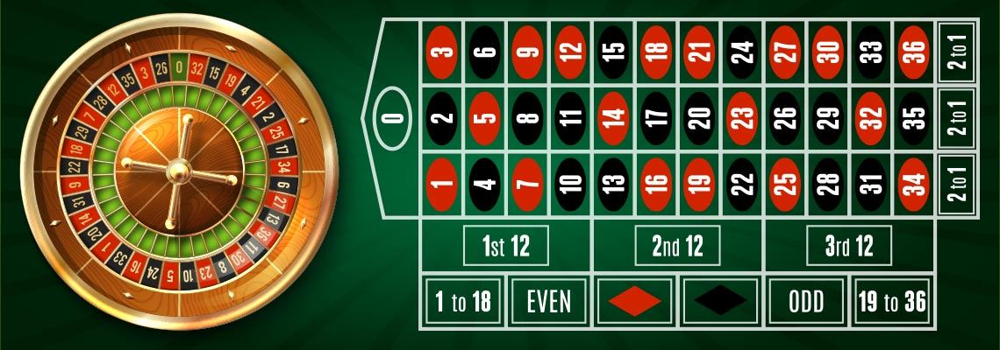

<template>
  <div class="MainContainer">
    <div class="TitleImg center">
      
    </div>
    <div class="single-wide">
      <h1>Roulette Strategies</h1>
      
      <p>Roulette does not have a basic strategy that equals a blackjack or craps strategy, simply because the player has no control over the outcome of a bet, as they do in blackjack, but there is still a basic strategy for playing roulette that can help novice roulette players reduce the house’s edge as much as possible.  The best advice available for playing Roulette is to only play at a table that offers single zero.  This simply means that there is only one green zero instead of two or three.  Picking the correct table is the best advice you can get when considering the game of Roulette.   </p>
      <p>The first thing to remember in basic roulette strategy is that you want to reduce the house’s edge as much as possible. To do this, you must stay away from double zero roulette tables. Always stick to single zero tables. Why? Because the house edge is slightly less on a single zero table than on an American double zero table. It is easy to understand why. When you bet on a number, let’s say number 1, on a single zero table, you have 36 numbers going against you (2-36 and single zero), giving you a 36-1 chance of your number coming up. However, when you bet on number 1 an American roulette table with the double zero, you have 37 numbers going against you (2-36, single zero and double zero), which gives you a 37-1 chance of your number coming up. But both bets pay out the same odds of 35-1. In short, you would be crazy to play an American Roulette table with a double zero if you had the option to play on a European Roulette table with a single zero only. </p>
      <p>So the basic strategy for playing roulette is simply to maximize your chances against the house.  </p>
      <p>The only time VDF would suggest you play the game of roulette is with a matchplay coupon.  You must choose from the even money bets at Roulette when playing a matchplay.   These 'even money' bets include betting on Even, Odd, Low (numbers 1 through 18), High (numbers 19 through 36), or Red or Black. All of these wagers pay out at 1 to 1.   With a matchplay coupon, you have a massive advantage over the house.  Simply play the exact amount of your matchplay coupon with the coupon on either red or black.  If the number comes in you will double your money, if the other color comes in (or green) you lose the amount you bet.  It really is that simple.  The house has a 2.7% advantage on a black/red bet on a single zero roulette table, but you will be paid 2 for 1 with a matchplay coupon.  This is a very easy, straight forward way to play a matchplay coupon with a massive advantage over the house.  </p>
      <p>However, if you really want to play roulette, there is also a basic strategy you can employ once you decide to play at the European (single zero) Roulette table. There is nothing complicated about this method, nothing you have to really remember, which is why it is the ‘basic’ roulette strategy.  On any roulette table, there are two different kinds of bets that pay 2-1. You have the Dozens and you have the Columns. The Dozens are the first 12, second 12 and third 12 numbers on the table. The Columns are the first column of numbers, the second column of numbers and the third column of numbers on the inside of the roulette table. This basic strategy can be employed when betting on either of these selections.  The house has the advantage on all of these wagers and although these strategies might increase your time on the tables, we do not recommend using them. </p>
      <p>The idea of this roulette basic strategy is to attempt to minimize your losses. So, place a bet of 1 unit on the first dozen (1-12) and 1 unit on the second dozen (13-24). So, if the ball lands on any number between 1 and 24, you win, and you make a profit of 1 unit, since the bet pays 2-1. If, however, the ball lands on a number between 25-36, or 0 (remember, never play on double zero to minimize your chances of beating the house), you lose. You can switch it around, betting on first dozen and third dozen, or second dozen and third dozen, as long as you keep your two bets on.  </p>
      <p>This is far from a guarantee of winning. In fact, over a long period of time, your bankroll will start to whittle away due to the edge the house has. But you can gain short-term profits using this basic roulette strategy, as long as you do not deviate from it. What you must remember is that any betting system or strategy which claims to guarantee you a win at the game of roulette is not telling you the truth. Betting systems as designed to make your session more interesting, and give you short-term gains, but you cannot eliminate the house edge by using them – it is why casinos put the house edge in. As long as you remember that, you can take this basic strategy and tinker with it to create a betting strategy for roulette of your own. </p>
      
      <h5>"My life experience has taught me nothing happens by chance. Even the idea of the ball in a roulette game: it's not chance it ends up in a certain place. It's forces that are at play".</h5>
      <h6>Andrea Bocelli </h6>
    </div>
  </div>
</template>
